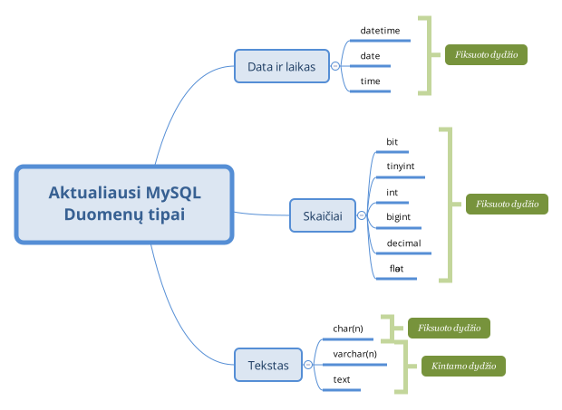

Reliacinės duomenų bazės apibrėžimas
Reliacinės duomenų bazės pradininku yra mokslininkas dr. Edgar F. Codd, suformulavęs 12 teiginių (savybių), kuriomis turi būti grindžiama reliacinė duomenų bazė ir jos valdymo sistema. Prie šių taisyklių grįšime vėliau.
Pagrindinis reliacinės duomenų bazės principas - duomenys yra saugomi sąryšiuose (angl. relations), kurie dažniausiai vadinami lentelėmis.
Reliacinė duomenų bazė - sąryšių (lentelių) rinkinys.
Reliacinėje duomenų bazėje lentelės tarpusavyje yra susietos ryšiais (angl. relationship).
Pagrindinės reliacinės duomenų bazės sąvokos
Pagrindinis reliacinės duomenų bazės elementas - lentelė, kurioje saugomi duomenys.
1 pav. Duomenų lentelė.
Lentelėje turėtų būti saugomi duomenys tik apie vieną dalyką, objektą. Duomenys tarp atskirų lentelių turi nesidubliuoti. Pavyzdžiui, pirkėjo pristatymo adresas turėtų būti saugomas vienoje lentelėje ir nesikartoti kitoje.
Kiekviena lentelė turi apibrėžtą struktūrą - laukus (stulpelius).
2 pav. Duomenų lentelės laukai (vertikalios rodyklės).
Kiekvienas laukas turi iš anksto apibrėžtą duomenų tipą, pagal kurį duomenų bazių valdymo sistema priskiria duomens valdymo įrankius. Plačiau apie duomenų tipus.
Pagrindinės lentelės lauko savybės, ypatybės:
Lentelėje saugomi duomenys yra vadinami įrašais (angl. records).
3 pav. Duomenų lentelės įrašai (horizontalios rodyklės).
Pagrindinė įrašui taikoma atisyklė yra ta, kad įrašai turi nesidubliuoti, t.y. nebūti dviejų įrašų, kurių laukų reikšmės yra identiškos.
Pagrindiniai duomenų tipai
Apibrėžiant duomenų lentelės struktūrą, reikia identifikuoti lentelės laukelių (stulpelių) paskirtį ir kokio pobūdžio duomenys juose bus saugomi. Lentelėje galima saugoti įvairaus pobūdžio duomenis - nuo žmogui suprantamos (skaičiai, tekstas ir pan.) iki baitų masyvo (failai ir pan.). Kiekvieno tipo duomenims saugoti duomenų bazių valdymo sistema turi dedikuotus atitinkamus standartinius duomenų tipus (žr. 4 pav.).
Duomenų tipai valdymo sistemai padeda nuspręsti koks atminties dydis yra būtinas išskirti duomenims saugoti ir kokias operacijas galima atlikti su duomenimis. Pavyzdžiui, jei duomenų tipas yra int (sveikas skaičius), tai sistema leis atlikti aritmetines operacijas, atlikti palyginimus ir t.t., jei datos tipas (date) - atlikti datų operacijas: palyginti datas, išskirti atskirus datos fragmentus, pridėti/atimti tam tikrą kiekį dienų/mėnesių/metų ir t.t.

4 pav. Pagrindiniai MySQL duomenų tipai.
Paveikslėlyje pateikti pagrindiniai standartiniai MySQL valdymo sistemos duomenų tipai. Šie duomenų tipai priklauso SQL standartui, dėl to šiuos tipus rasime bet kurioje kitoje reliacinės duomenų bazės valdymo sistemoje.
Pagrindinės duomenų bazės projektavimo taisyklės
Duomenų bazės projektavimas - realaus pasaulio dalies informacijos modelio kūrimas. Projektavimas nėra sudėtingas procesas, užtenka žinoti pagrindines taisykles ir jomis vadovautis. Pradėkime šiomis taisyklėmis:
Kiekvienas parengtas projektas gali turėti daugiau ar mažiau trūkumų, nustatyti projekto kokybę padeda šie klausimai:
Jei duomenys toje pačioje lentelėje ar tarp atskirų lentelių nesikartoja ir praplečiant funkcionalumą nereikia redaguoti esamos struktūros, tai tokį projektą galima drąsiai vadinti kokybišku, kitu atveju, mažiau kokybišku. Panagrinėkime pavyzdį (žr. 5 pav.).
5 pav. Fakultetuose vykdomos studijų programos.
Paveikslėlyje pateiktas fakultetuose vykdomų studijų programų projektas. Iš pirmo žvilgsnio gali pasirodyti, kad visai neblogas projektas - įvedama studijų programa, nurodomas studijų lygmuo ir priskiriama fakultetui. Žvelgdami į šį projektą atsakykime į kontrolinius kokybės klausimus, bet prieš tai, užsipildykime šią lentelę duomenimis (žr. 6 pav.), kad būtų lengviau atsakyti į klausimus.
6 pav. Fakultetuose vykdomų studijų programų duomenys.
Ar dubliuojasi, pasikartoja duomenys lentelėje? - Taip, matome, kad pasikartoja studijų lygmens (paveikslėlyje programos_tipas) ir fakultetų pavadinimai. Ar dubliuojasi, pasikartoja duomenys tarp lentelių? - Ne, nes vienintelė lentelė. Ar lentelėje saugomi duomenys apie vieną objektą? - Ne, šioje lentelėje saugomi duomenys apie studijų programą ir fakultetą. Ar praplečiant funkcionalumą reikės daug pakeitimų atlikti? - Taip, pavyzdžiui, jei nuspręstume sistemą praplėsti fakultete dirbančių dėstytojų duomenimis ar studijų programą studijuojančių studentų duomenimis, tai reikėtų nemažai atlikti pakeitimų.
Dažniausiai, išsprendus duomenų dubliavimosi, pasikartojimo problemą, išsisprendžia ir funkcionalumo praplėtimo problema. Duomenų dubliavimosi problema išsprendžiama papildomomis lentelėmis. Pavyzdyje matome, kad dažnai pasikartoja programos_tipas reikšmė ir fakulteto duomenys. Perkėlus studijų lymens duomenis ir fakulteto duomenis į atskiras lenteles, perteklinis duomenų dubliavimas panaikinamas. Vėliau belieka šias lenteles susieti tarpusavyje.